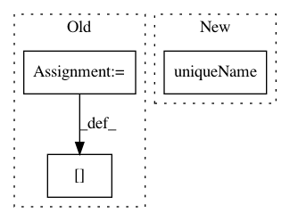

198d7eee040d0eb3c5183cdf50a6350db53a5623,pytorch2keras/converter.py,,get_leaf_id,#Any#Any#,142
Before Change
if node_id.group(0)[:-11] in state:
return state[node_id.group(0)[:-11]]
else:
state[node_id.group(0)[:-11]] = str(len(state.keys()))
return str(state[node_id.group(0)[:-11]])
def pytorch_to_keras(
model, args, input_shapes,
After Change
def get_leaf_id(node, state={}):
return str(node.uniqueName())
def pytorch_to_keras(
In pattern: SUPERPATTERN
Frequency: 3
Non-data size: 3
Instances
Project Name: nerox8664/pytorch2keras
Commit Name: 198d7eee040d0eb3c5183cdf50a6350db53a5623
Time: 2019-01-29
Author: nerox8664@gmail.com
File Name: pytorch2keras/converter.py
Class Name:
Method Name: get_leaf_id
Project Name: lanpa/tensorboardX
Commit Name: 71e3ab5600687fc5d8b5e891fbc12f82869c11d7
Time: 2018-11-08
Author: teffland@users.noreply.github.com
File Name: tensorboardX/pytorch_graph.py
Class Name:
Method Name: parse
Project Name: nerox8664/pytorch2keras
Commit Name: 1cf4c73059ba4435f37a93a316edbd426263cbf0
Time: 2018-12-20
Author: nerox8664@gmail.com
File Name: pytorch2keras/converter.py
Class Name:
Method Name: pytorch_to_keras